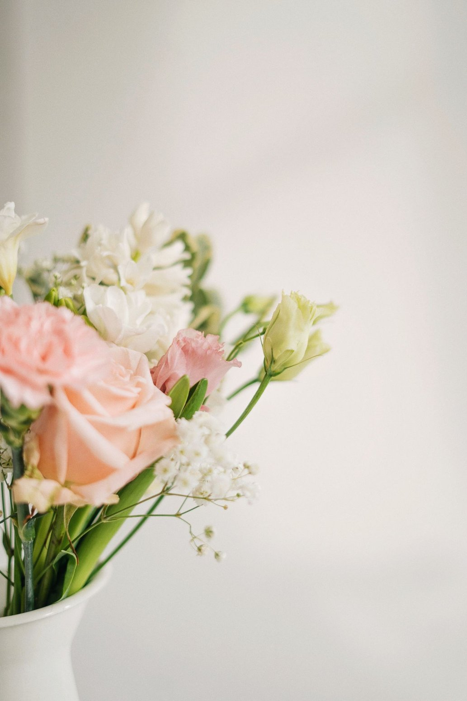

맞춤형 원예치료
참여자의 특성과 필요를 고려하여 꽃과 식물을 활용하는 맞춤형 원예치료 활동을 지향합니다.
PERSONALIZED HORTICULTURAL THERAPY
꽃으로 아픔을 어루만지고, 식물과 함께 마음의 변화를 만납니다. 한 사람 한 사람의 속도와 필요를 생각하는 자람원예치료연구소입니다.

01 / ABOUT JARAM
서로 다른 식물이 각자의 모습으로 자라듯, 우리에게도 저마다의 속도와 시간이 있습니다.
자람원예치료연구소는 식물과 함께하는 경험을 통해 자신을 표현하고, 사람과 자연의 관계를 새롭게 발견하는 시간을 지향합니다. 원예치료 컨설팅과 대상자별 맞춤형 원예치료를 중심으로 활동합니다.
꽃으로 아픔을 어루만지는
복지원예슈퍼바이저
02 / WHAT WE DO
식물의 생명력을 매개로, 참여 대상과 목적에 맞는 원예 활동을 생각합니다.
참여자의 특성과 필요를 고려하여 꽃과 식물을 활용하는 맞춤형 원예치료 활동을 지향합니다.
초등교과 연계 원예활동을 비롯해 식물을 통해 관찰하고 표현하며 배울 수 있는 교육 콘텐츠를 소개합니다.
원예치료 활동을 준비하는 기관과 단체가 프로그램의 목적과 참여 대상을 검토할 수 있도록 상담합니다.
대상별 복지원예 교육 경험을 대표 기관과 함께 살펴보세요.
주간보호센터·재활센터·특수학교·보호작업장 원예치료
복지관·요양시설·치매안심센터·농촌건강장수마을 프로그램
유치원·학교·교육지원청 Wee센터 원예교육 및 특별교육
다문화가정, 장애자녀와 부모, 학부모 대상 가족 활동
교사연수·에듀힐링·대학생 및 지역주민 교육
감정노동자·의료 및 복지 현장 프로그램
강의기관 이력은 현재 계약·제휴 상태를 의미하지 않습니다.
프로그램의 대상·세부 내용·운영 가능 여부는 문의를 통해 확인해 주세요.
03 / HORTICULTURAL ACTIVITY KITS
대상자 맞춤 원예활동식물을 직접 가꾸는 시간을 더 많은 사람의 일상으로 전합니다. 1인 가구 어르신을 위한 상추재배키트 등 참여 대상에 맞춘 원예활동을 진행하고 있습니다.
어르신을 위한 상추재배키트1인 가구 어르신이 식물을 가꾸는 활동에 참여하도록 키트를 준비했습니다.
대상자 맞춤형 원예교육식물을 관찰하고 가꾸는 활동을 교육 현장과 복지 현장에서 이어갑니다.
원예키트 · 프로그램 문의키트 구성, 프로그램 진행과 협업에 관한 상담을 남겨주세요.
04 / FIELD & EXPERIENCE
직접 운영한 원예활동과 강의, 연구, 수상 이력을 소개합니다.
복지기관 원예치료, 어르신 돌봄, 원예키트까지 현장에서 이어온 순간들을 만나보세요.
장애인주간보호센터와 중학생 봉사단이 함께 가을 테라리움을 만들었습니다.
상주시치매안심센터 우리마을 예쁜치매쉼터에서 그림책과 연계한 원예치료를 진행했습니다.
장애인주간보호센터에서 오전·오후 테라리움 원예활동을 진행했습니다.
실버카 이용 어르신들에게 나눌 꽃바구니를 만들며 원예수업을 진행했습니다.
오랜 인연을 이어온 자원봉사센터·함장종합사회복지관에서 원예활동을 진행하고 참여자들과 소감을 나눴습니다.
1인 가구 어르신을 위한 상추재배키트를 준비했습니다. 대상자별로 식물을 가꾸는 경험을 전합니다.
장애인주간보호센터에서 참여자들이 자신의 속도로 원예활동에 참여하도록 도우며 수업을 이어갔습니다.
노인보호전문기관에서 학대피해 어르신들을 위한 원예치료를 진행했습니다.
대구시노인종합복지관에서 어르신들과 누름꽃 거울을 만들고 정성껏 포장했습니다.
대구시노인종합복지관에서 홀로 생활하는 어르신들과 반려식물을 가꾸는 수업을 진행했습니다.
장애인주간보호센터에서 종이 장식과 꽃을 활용한 할로윈 꽃바구니 만들기를 진행했습니다.
장애인주간보호센터에서 참여자들과 꽃 원예활동을 진행했습니다.
장애인주간보호센터에서 참여자들과 누름꽃 액자 활동을 진행했습니다.
노인복지관에서 참여자들과 식물 가꾸기 활동을 진행했습니다.
장애인주간보호센터에서 참여자들과 누름꽃 액자 활동을 진행했습니다.
장애인주간보호센터에서 참여자들과 소국 화분 활동을 진행했습니다.
장애인주간보호센터에서 참여자들과 소국 화분 활동을 진행했습니다.
노인복지관에서 참여자들과 꽃 원예활동을 진행했습니다.
노인복지관에서 참여자들과 원예활동을 진행했습니다.
장애인주간보호센터에서 참여자들과 꽃 원예활동을 진행했습니다.
장애인주간보호센터에서 참여자들과 테라리움 활동을 진행했습니다.
장애인주간보호센터에서 참여자들과 다육식물 정원 활동을 진행했습니다.
장애인주간보호센터에서 참여자들과 프리저브드 꽃 장식 활동을 진행했습니다.
장애인주간보호센터에서 참여자들과 향기 원예활동을 진행했습니다.
노인종합복지관에서 참여자들과 꽃 원예활동을 진행했습니다.
장애인주간보호센터에서 참여자들과 프리저브드 꽃 장식 활동을 진행했습니다.
지체장애인협회에서 참여자들과 꽃바구니 활동을 진행했습니다.
장애인주간보호센터에서 참여자들과 꽃 원예활동을 진행했습니다.
지체장애인협회에서 참여자들과 모스 액자 활동을 진행했습니다.
장애인주간보호센터에서 참여자들과 플라워 리스 활동을 진행했습니다.
노인종합복지관에서 참여자들과 꽃 원예활동을 진행했습니다.
노인종합복지관에서 참여자들과 테라리움 활동을 진행했습니다.
노인종합사회복지관에서 참여자들과 반려식물 심기 활동을 진행했습니다.
장애인주간보호센터에서 참여자들과 카네이션 꽃바구니 활동을 진행했습니다.
노인종합사회복지관에서 참여자들과 반려식물 정원 활동을 진행했습니다.
치매안심센터에서 참여자들과 누름꽃 시계 활동을 진행했습니다.
장애인주간보호센터에서 참여자들과 식물 심기 활동을 진행했습니다.
노인종합사회복지관에서 참여자들과 테라리움 활동을 진행했습니다.
노인종합사회복지관에서 참여자들과 꽃 원예활동을 진행했습니다.
치매안심센터에서 참여자들과 반려식물 정원 활동을 진행했습니다.
장애인주간보호센터에서 참여자들과 원예활동을 진행했습니다.
장애인주간보호센터에서 참여자들과 하바리움 활동을 진행했습니다.
장애인주간보호센터에서 참여자들과 이오난사 드림캐처 활동을 진행했습니다.
원예치료 현장에서 참여자들과 반려식물 가꾸기 활동을 진행했습니다.
노인종합사회복지관에서 참여자들과 반려식물 심기 활동을 진행했습니다.
장애인주간보호센터에서 참여자들과 원예치료를 진행했습니다.
장애인주간보호센터에서 참여자들과 누름꽃 시계 활동을 진행했습니다.
노인종합사회복지관에서 참여자들과 다육식물 정원 활동을 진행했습니다.
장애인주간보호센터에서 참여자들과 꽃 원예활동을 진행했습니다.
노인종합사회복지관에서 참여자들과 반려식물 가꾸기 활동을 진행했습니다.
어르신과 함께 반려식물 가꾸기 활동을 진행했습니다.
노인종합사회복지관에서 참여자들과 플라워 리스 활동을 진행했습니다.
장애인주간보호센터에서 참여자들과 원예치료를 진행했습니다.
어르신 홈가드너에서 참여자들과 식물 가꾸기 활동을 진행했습니다.
치매안심센터에서 참여자들과 원예치료를 진행했습니다.
어르신 홈가드너에서 참여자들과 식물 가꾸기 활동을 진행했습니다.
장애인주간보호센터에서 참여자들과 다육식물 정원 활동을 진행했습니다.
어르신 홈가드너에서 참여자들과 누름꽃 액자 활동을 진행했습니다.
원예치료 현장에서 참여자들과 원예치료를 진행했습니다.
장애인주간보호센터에서 참여자들과 토피어리 활동을 진행했습니다.
장애인주간보호센터에서 참여자들과 꽃 장식 활동을 진행했습니다.
어르신 홈가드너에서 참여자들과 프리저브드 꽃 장식 활동을 진행했습니다.
치매안심센터에서 참여자들과 플라워 리스 활동을 진행했습니다.
장애인주간보호센터에서 참여자들과 토피어리 활동을 진행했습니다.
어르신 홈가드너에서 참여자들과 다육식물 정원 활동을 진행했습니다.
장애인주간보호센터에서 참여자들과 원예치료를 진행했습니다.
장애인주간보호센터에서 참여자들과 식물 원예활동을 진행했습니다.
어르신 홈가드너에서 참여자들과 모스 액자 활동을 진행했습니다.
장애인주간보호센터에서 참여자들과 수박 테라리움 활동을 진행했습니다.
장애인주간보호센터에서 참여자들과 수박 테라리움 활동을 진행했습니다.
장애인주간보호센터에서 참여자들과 꽃 원예활동을 진행했습니다.
어르신 홈가드너에서 참여자들과 식물 가꾸기 활동을 진행했습니다.
어르신 홈가드너에서 참여자들과 식물 가꾸기 활동을 진행했습니다.
장애인주간보호센터에서 참여자들과 누름꽃 시계 활동을 진행했습니다.
어르신 홈가드너에서 참여자들과 플라워 토피어리 활동을 진행했습니다.
장애인주간보호센터에서 참여자들과 플라워 리스 활동을 진행했습니다.
장애인주간보호센터에서 참여자들과 누름꽃 명찰 활동을 진행했습니다.
어르신 홈가드너에서 참여자들과 드림캐처 활동을 진행했습니다.
어르신 홈가드너에서 참여자들과 식물 가꾸기 활동을 진행했습니다.
장애인주간보호센터에서 참여자들과 누름꽃 시계 활동을 진행했습니다.
어르신 홈가드너에서 참여자들과 토피어리 활동을 진행했습니다.
장애인주간보호센터에서 참여자들과 프리저브드 꽃 장식 활동을 진행했습니다.
치매안심센터에서 참여자들과 원예치료를 진행했습니다.
어르신 홈가드너에서 참여자들과 자연물 콜라주 활동을 진행했습니다.
장애인주간보호센터에서 참여자들과 원예활동을 진행했습니다.
장애인주간보호센터에서 참여자들과 원예치료를 진행했습니다.
장애인주간보호센터에서 참여자들과 원예활동을 진행했습니다.
어르신 홈가드너에서 참여자들과 식물 가꾸기 활동을 진행했습니다.
장애인주간보호센터에서 참여자들과 원예활동을 진행했습니다.
치매안심센터에서 참여자들과 다육식물 정원 활동을 진행했습니다.
장애인주간보호센터에서 참여자들과 카네이션 꽃바구니 활동을 진행했습니다.
치매안심센터에서 참여자들과 꽃 원예활동을 진행했습니다.
장애인주간보호센터에서 참여자들과 토피어리 활동을 진행했습니다.
장애인주간보호센터에서 참여자들과 꽃 원예활동을 진행했습니다.
치매안심센터에서 참여자들과 원예치료를 진행했습니다.
장애인주간보호센터에서 참여자들과 플라워 토피어리 활동을 진행했습니다.
치매안심센터에서 참여자들과 원예치료를 진행했습니다.
어르신과 함께 편백나무 트리 활동을 진행했습니다.
장애인주간보호센터에서 참여자들과 편백나무 트리 활동을 진행했습니다.
장애인주간보호센터에서 참여자들과 꽃 리스 활동을 진행했습니다.
장애인주간활동센터에서 참여자들과 꽃 리스 활동을 진행했습니다.
경로당에서 참여자들과 편백나무 트리 활동을 진행했습니다.
경로당에서 참여자들과 원예치료를 진행했습니다.
경로당에서 참여자들과 다육식물 정원 활동을 진행했습니다.
장애인주간보호센터에서 참여자들과 테라리움 활동을 진행했습니다.
경로당에서 참여자들과 꽃 원예활동을 진행했습니다.
장애인주간보호센터에서 참여자들과 테라리움 활동을 진행했습니다.
경로당에서 참여자들과 꽃 원예활동을 진행했습니다.
장애인주간보호센터에서 참여자들과 꽃 원예활동을 진행했습니다.
장애인주간보호센터에서 참여자들과 누름꽃 액자 활동을 진행했습니다.
노인복지관에서 참여자들과 원예활동을 진행했습니다.
치매예방 프로그램에서 참여자들과 모스 원예활동을 진행했습니다.
치매예방 프로그램에서 참여자들과 원예활동을 진행했습니다.
장애인주간보호센터에서 참여자들과 원예치료를 진행했습니다.
1인 가구 어르신과 함께 원예치료를 진행했습니다.
1인 가구 어르신과 함께 꽃 원예활동을 진행했습니다.
어르신과 함께 원예활동을 진행했습니다.
치매예방 프로그램에서 참여자들과 원예활동을 진행했습니다.
치매예방 프로그램에서 참여자들과 반려식물 정원 활동을 진행했습니다.
치매예방 프로그램에서 참여자들과 꽃바구니 활동을 진행했습니다.
1인 가구 어르신과 함께 원예치료를 진행했습니다.
장애인주간보호센터에서 참여자들과 토피어리 활동을 진행했습니다.
어르신 마음돌봄에서 참여자들과 누름꽃 액자 활동을 진행했습니다.
장애인주간보호센터에서 참여자들과 원예활동을 진행했습니다.
어르신 마음돌봄에서 참여자들과 원예활동을 진행했습니다.
장애인주간보호센터에서 참여자들과 모스 원예활동을 진행했습니다.
어르신 마음돌봄에서 참여자들과 다육식물 정원 활동을 진행했습니다.
어르신 마음돌봄에서 참여자들과 원예활동을 진행했습니다.
장애인주간보호센터에서 참여자들과 꽃 원예활동을 진행했습니다.
어르신 마음돌봄에서 참여자들과 수경재배 활동을 진행했습니다.
어르신과 함께 수박 테라리움 활동을 진행했습니다.
어르신 마음돌봄에서 참여자들과 원예활동을 진행했습니다.
장애인주간보호센터에서 참여자들과 누름꽃 시계 활동을 진행했습니다.
어르신과 함께 원예활동을 진행했습니다.
장애인주간보호센터에서 참여자들과 수경재배 활동을 진행했습니다.
어르신과 함께 원예활동을 진행했습니다.
노인복지관에서 참여자들과 원예치료를 진행했습니다.
장애인주간보호센터에서 참여자들과 원예활동을 진행했습니다.
장애인주간보호센터에서 참여자들과 프리저브드 꽃 장식 활동을 진행했습니다.
어르신 마음돌봄에서 참여자들과 원예활동을 진행했습니다.
장애인주간보호센터에서 참여자들과 식물 원예활동을 진행했습니다.
장애인주간보호센터에서 참여자들과 식물 원예활동을 진행했습니다.
장애인주간보호센터에서 참여자들과 비누꽃 화환 활동을 진행했습니다.
장애인주간보호센터에서 참여자들과 모스 트리 활동을 진행했습니다.
어르신들과 함께 생화 트리 활동을 진행했습니다.
장애인주간보호센터에서 참여자들과 원예치료를 진행했습니다.
어르신들과 함께 비누꽃 화환 활동을 진행했습니다.
어르신들과 함께 원예치료를 진행했습니다.
청년장애인·가족에서 참여자들과 석고 방향제 활동을 진행했습니다.
어르신들과 함께 모스 리스 활동을 진행했습니다.
어르신들과 함께 반려식물 모아 심기 활동을 진행했습니다.
어르신들과 함께 원예치료를 진행했습니다.
어르신들과 함께 압화 무드등 활동을 진행했습니다.
청년장애인·가족에서 참여자들과 유칼립투스 리스 활동을 진행했습니다.
어르신들과 함께 고무신 다육화분 활동을 진행했습니다.
노인복지관에서 참여자들과 원예치료를 진행했습니다.
장애인주간보호센터에서 참여자들과 꽃바구니 활동을 진행했습니다.
원예치료 현장에서 참여자들과 원예치료를 진행했습니다.
장애인주간보호센터에서 참여자들과 식물 하트 유인 활동을 진행했습니다.
청년장애인·가족에서 참여자들과 꽃 원예활동을 진행했습니다.
장애인주간보호센터에서 참여자들과 고무신 다육화분 활동을 진행했습니다.
장애인주간보호센터에서 참여자들과 원예치료를 진행했습니다.
청년장애인·가족에서 참여자들과 원예치료를 진행했습니다.
장애인주간보호센터에서 참여자들과 원예치료를 진행했습니다.
장애인주간보호센터에서 참여자들과 토피어리 활동을 진행했습니다.
원예치료 현장에서 참여자들과 테라리움 활동을 진행했습니다.
청년장애인·가족에서 참여자들과 원예치료를 진행했습니다.
장애인주간보호센터에서 참여자들과 원예치료를 진행했습니다.
장애인주간보호센터에서 참여자들과 원예치료를 진행했습니다.
어르신들과 함께 반려식물 가꾸기 활동을 진행했습니다.
어르신들과 함께 식물 가꾸기 활동을 진행했습니다.
장애인주간보호센터에서 참여자들과 원예치료를 진행했습니다.
어르신들과 함께 식물 가꾸기 활동을 진행했습니다.
어르신들과 함께 꽃 원예활동을 진행했습니다.
어르신들과 함께 식물 가꾸기 활동을 진행했습니다.
원예치료 현장에서 참여자들과 원예치료를 진행했습니다.
어르신들과 함께 테라리움 활동을 진행했습니다.
복지기관 힐링원예에서 참여자들과 압화 볼펜 만들기 활동을 진행했습니다.
복지기관 힐링원예에서 참여자들과 반려식물 가꾸기 활동을 진행했습니다.
복지기관 힐링원예에서 참여자들과 식물 모아 심기 활동을 진행했습니다.
청년장애인 가족 참여자들과 원예치료를 진행했습니다.
복지기관 힐링원예에서 참여자들과 스투키 테라리움 활동을 진행했습니다.
복지기관 힐링원예에서 참여자들과 아레카야자 식물심기 활동을 진행했습니다.
복지기관 힐링원예에서 참여자들과 다육식물 정원 활동을 진행했습니다.
청년장애인 가족 참여자들과 감정표현 원예작품 활동을 진행했습니다.
복지기관 힐링원예에서 참여자들과 수경재배 활동을 진행했습니다.
여성장애인 원예치료 참여자들과 플라워 가든 활동을 진행했습니다.
청년장애인 가족 참여자들과 원예치료를 진행했습니다.
청년장애인 가족 참여자들과 원예치료를 진행했습니다.
장애인 원예치료 프로그램에서 원예치료를 진행했습니다.
치매안심센터 프로그램에서 꽃 화관 활동을 진행했습니다.
장애인 원예치료 프로그램에서 하바리움 전구 활동을 진행했습니다.
장애인 원예치료 프로그램에서 원예치료를 진행했습니다.
치매안심센터 프로그램에서 크리스마스 트리 활동을 진행했습니다.
장애인 원예치료 프로그램에서 원예치료를 진행했습니다.
장애인 원예치료 프로그램에서 원예치료를 진행했습니다.
치매안심센터 프로그램에서 프리저브드 전구 활동을 진행했습니다.
장애인 원예치료 프로그램에서 꽃바구니 활동을 진행했습니다.
장애인 원예치료 프로그램에서 스칸디아모스 공예 활동을 진행했습니다.
노인요양시설 프로그램에서 식물 심기 활동을 진행했습니다.
원예치료 현장 프로그램에서 원예치료를 진행했습니다.
노인요양시설 프로그램에서 원예치료를 진행했습니다.
원예치료 현장 프로그램에서 원예치료를 진행했습니다.
장애인 원예치료 프로그램에서 가을 단풍나무 활동을 진행했습니다.
어르신 원예치료 프로그램에서 원예치료를 진행했습니다.
치매안심센터 프로그램에서 원예치료를 진행했습니다.
장애인 원예치료 프로그램에서 원예치료를 진행했습니다.
어르신 원예치료 프로그램에서 식물 심기 활동을 진행했습니다.
치매안심센터 프로그램에서 원예치료를 진행했습니다.
어르신 원예치료 프로그램에서 테라리움 활동을 진행했습니다.
치매안심센터 프로그램에서 원예치료를 진행했습니다.
어르신 원예치료 프로그램에서 원예치료를 진행했습니다.
치매안심센터 프로그램에서 원예치료를 진행했습니다.
치매안심센터 프로그램에서 원예치료를 진행했습니다.
치매안심센터 프로그램에서 원예치료를 진행했습니다.
직장인 마음돌봄 프로그램에서 식물 심기 활동을 진행했습니다.
장애인 원예치료 프로그램에서 꽃바구니 활동을 진행했습니다.
어르신 원예치료 프로그램에서 원예치료를 진행했습니다.
복지관 원예치료 프로그램에서 원예치료를 진행했습니다.
장애인 원예치료 프로그램에서 복조리 장식 활동을 진행했습니다.
장애인 원예치료 프로그램에서 크리스마스 리스 활동을 진행했습니다.
장애인 원예치료 프로그램에서 압화 텀블러 활동을 진행했습니다.
장애인 원예치료 프로그램에서 원예치료를 진행했습니다.
장애인 원예치료 프로그램에서 원예치료를 진행했습니다.
장애인 원예치료 프로그램에서 꽃화분 케이크 활동을 진행했습니다.
장애인 원예치료 프로그램에서 원예치료를 진행했습니다.
치매안심센터 프로그램에서 원예치료를 진행했습니다.
쌓아온 경험과 전문성을 살펴보세요.
아이디어정원(테라리움) 부문 장려상을 수상했습니다.
자료: 2026년 11월 제공 이력서제8회 대한민국 도시농업박람회에서 유미리·서경숙이 함께 참여한 팀의 원예치료 프로그램이 최우수작(충청북도지사상)으로 선정되었습니다.
자세히 보기제2회 원예치료 프로그램 경진대회에서 서경숙·유미리·이정자가 함께 참여한 또 다른 팀의 프로그램이 장려작으로 선정되었습니다.
자세히 보기한국원예치료복지협회 우수회원 표창장을 받았습니다.
자료: 2026년 11월 제공 이력서서울 aT센터에서 열린 제1회 경진대회에서 유미리·이정자·서경숙이 함께 참여한 팀의 원예치료 프로그램이 입선했습니다.
자세히 보기한국원예치료복지협회 제235회 온라인 워크숍에서 발달장애인과 그 가족을 위한 원예치료 프로그램 사례를 주제로 강의했습니다.
자세히 보기유미리·이영기·손장호가 함께 『행복 자람 원예교실』을 집필했습니다. 초등교과와 연계한 12가지 원예활동과 활동지를 담았습니다.
자세히 보기유아 40명을 대상으로 총 20회의 원예치료 프로그램을 진행하며 자기표현에 미치는 영향을 연구했습니다. 건국대학교 원예치료학 석사학위를 취득했습니다.
자세히 보기2017년 상반기 복지원예 슈퍼바이저 자격심사에 합격하며 원예치료 전문성을 인정받았습니다.
자세히 보기강의·교수·연구 활동의 연혁을 볼 수 있습니다.
강의와 원예교육, 기관 연계 활동의 다양한 현장 소식을 인스타그램에서 만나보세요.
인스타그램 활동 더 보기05 / EDUCATION CONTENTS
『행복 자람 원예교실』에서 만날 수 있는 다채로운 원예활동입니다.
원예교육 주제 · 꽃과 식물로 표현하고, 관찰하며, 함께 성장하는 활동을 소개합니다.
 행복 자람 원예교실 · 2022
행복 자람 원예교실 · 2022
06 / PUBLICATION
초등교과 연계 원예교육 저서
초등학교 교육과정에 원예활동을 접목한 교육 자료입니다. 공감과 배려, 자연과의 공존을 주제로 프로그램 개발 과정과 12가지 원예활동, 활동지를 소개합니다.
원예치료 프로그램 연구 발표, 공동연구와 전문 저술을 소개합니다.
대표 도서 『행복 자람 원예교실』은 위에서 소개합니다.
07 / PEOPLE BEHIND JARAM
복지원예 현장과 교수·연구 활동을 통해 다양한 참여자와 식물이 만나는 배움과 돌봄의 시간을 이어오고 있습니다.
학위·자격 취득과 입학 예정 사실을 구분해 안내합니다.
2027학년도 대구교육대학교 교육대학원 박사과정은 합격에 따른 입학 예정으로만 표기합니다.
자료 출처: 2026년 11월 유미리 소장 제공 이력서와 2026.11.20 대구교육대학교 합격통지서 · 출처 안내 ↗
08 / JARAM JOURNAL
어르신과 복지기관 참여자들의 손끝에서 피어난 원예활동의 순간을 사진으로 만나보세요.
09 / LET'S GROW TOGETHER
원예치료, 원예교육, 프로그램 기획에 관한 문의를 남겨주세요. 문의는 외부 상담 양식으로 연결됩니다.
문의 남기기 외부 문의 페이지가 새 창으로 열립니다.원예치료 현장과 전문 인력 양성 교육을 이어오고 있습니다.